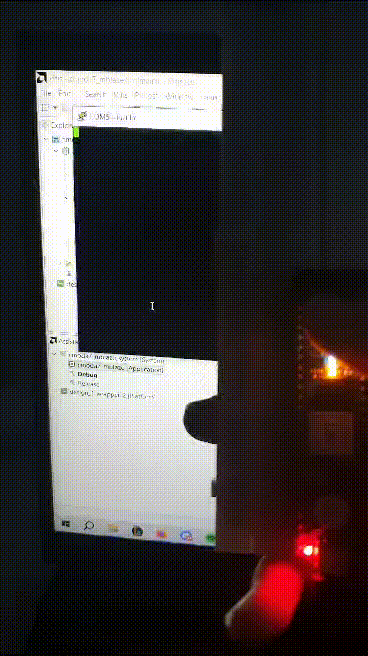
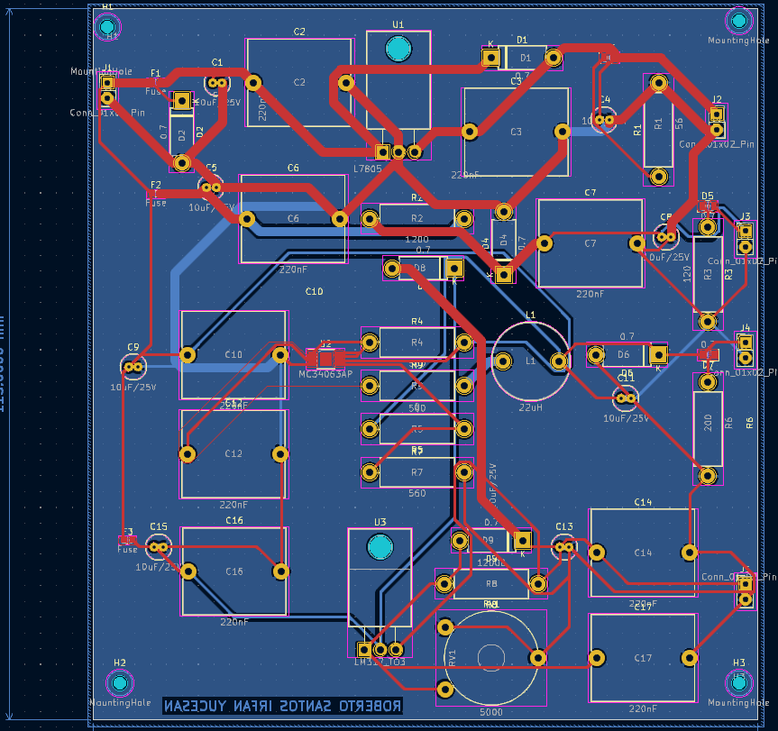
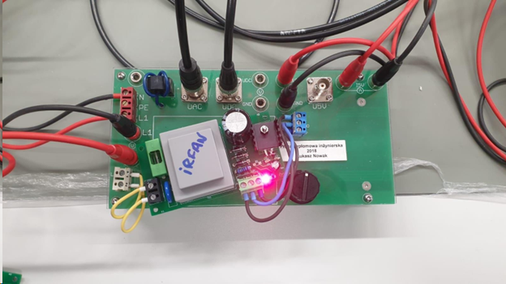
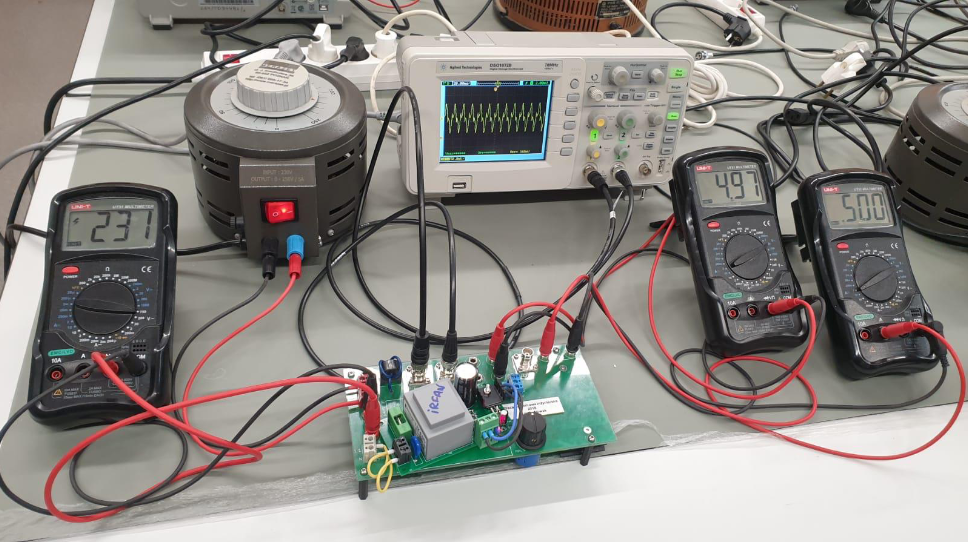
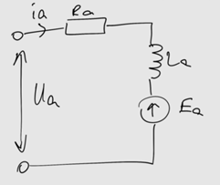
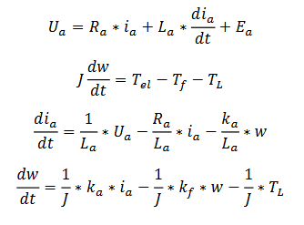
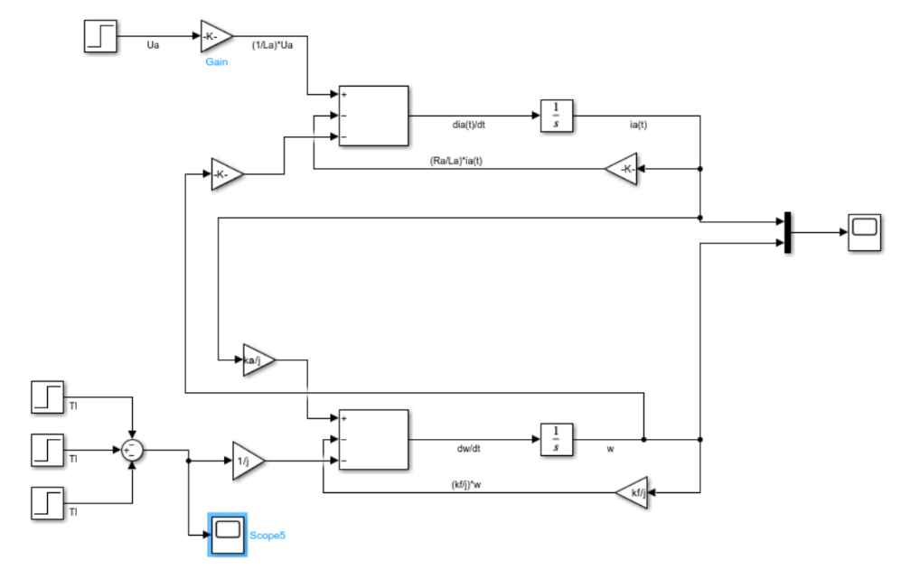
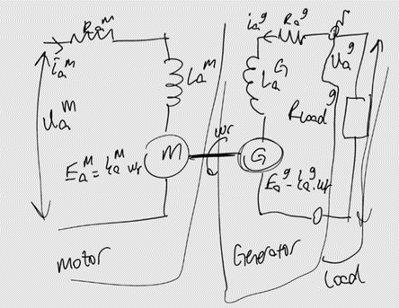
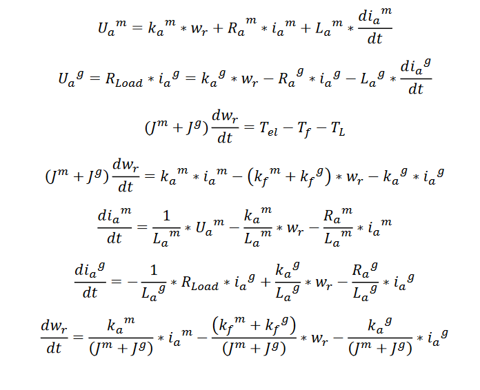
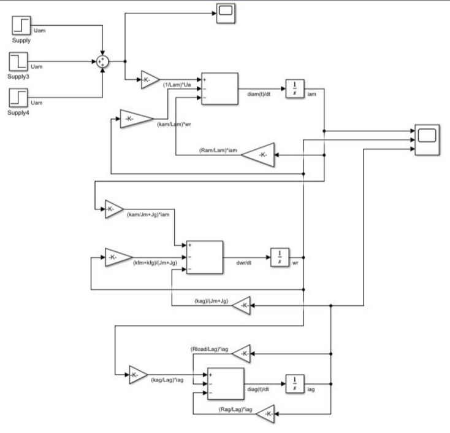

Hi, I am İrfan. Welcome to my portfolio! I am in my senior year at Marmara University studying Electrical-Electronics Engineering. I am interested in hardware design and embedded systems. My goal is to work as a Hardware Engineer in the future.
Education
Marmara University - Electrical-Electronics Engineering (Bachelor's Degree) | 2020-2025
Poznan University of Technology - Automation, Control and Robotics Engineering (Bachelor's Degree) | 2023-2024
Internships
08.2024-09.2024 | ASELSAN - Electronics Warfare Hardware Test Design Engineering Intern
06.2024-07.2024 | ROKETSAN - Electrical Hardware Design Engineering Intern
07.2023-08.2023 | KONE Elevators and Escalators - Project Engineering Intern
Competitions
TEKNOFEST Ankara Roboleague Finalist | 2023
Certifications
The Ultimate 2023 Fullstack Web Development Bootcamp
Verilog HDL: VLSI Hardware Design Comprehensive Masterclass
The Complete Python Bootcamp: From Zero to Hero in Python
Events
Marmara University | Defense Industry Summit 2023
Marmara University | Artificial Intelligence Summit 2023
Projects
Pong Game in Verilog on VGA display in Verilog
This was my final project for my Digital Design course.

The game is a simple Pong game where the user can move the paddle through the buttons on the FPGA board.
There is a VGA Pmod to make life easier but I did not want to pay for the module so instead I just made the VGA connections myself according to the schematic below:


So we have 3 color signals, 1 horizontal sync signal, 1 vertical sync signal and the rest are either not connected or just connected to ground voltage.
Now for the detailed explanation on how the code works
To drive a display on the monitor there are 2 signals. VSync (vertical sync) and the Hsync (horizontal sync).
My monitor works on 60Hz Vsync so we need to make the clock calculations according to that. To drive a VGA signal 640 x 480 @ 60 Hz we need to have a 25MHz pixel frequency. And since my FPGA board (CMOD A7-35T) has a 12MHz input clock, I had to use Vivado's Clocking Wizard IP and since I am using a 640x480 resolution I made the active area between those pixels.
After managing to drive the display successfully, I needed to create the game.
First I decided to use only 3 color bits -one for red, one for green and one for blue- because I do not have the Pmod I needed to connect them by myself so I did not bother on adding more. But you can also use more colors by changing the number of color bits.
There are 3 parts on this game - the ball, the paddle and the walls. We can create the wall easily - I made it 25px thick but you can also change it in the code - by setting it up in the counters for X and Y.
The next part is the ball. The ball will start at the top left corner and move towards bottom right. We can set the size,the speed, the color and the shape -After the presentation of my project I changed the shape of the ball using the ROM that I created but left it out in the final code- of the ball. But first we need to change its speed in the opposite direction whenever it hits the wall or the paddle. For this part we need to say that if the right side of the square ball hits the wall, then we should change the speed. I did that part one by one for all the scenarios – the ball can hit top, bottom, left or right side of the wall so in total 4 scenarios- and it turned out fine.
The paddle part is much easier, we create it on the left side on the screen and give it a height from the ground and a thickness and length so it can be used as different difficulty settings if made further improvements. Also we can change the speed of the paddle by changing the parameter in the code. To see the code please visit my GitHub account (github.com/irfanyucesan).
VGA Image Testing in Verilog

This is an easier version of the pong game since nothing is moving on the screen. Since I was using 3 bits for the colors I showed all 8 colors I could use on the screen. The VSync and HSync is the same as the Pong project but the image code is simpler compared to the first project. To see the code please visit my GitHub account (github.com/irfanyucesan).
Since the length of the screen is 640 pixels and in total I have 8 different colors due to 3 bits of color - 2^3=8 - I gave every color 80 pixels to make them even. I also made the top of the screen white and the bottom of it just to show that we can also change the colors horizontally.
Microblaze on FPGA
Microblaze allows you to turn your FPGA into a microcontroller. You can choose which parts of the FPGA you would like to put into the microcontroller, the LEDs, the buttons, the switches etc..You can choose which parts you would like to use on Vivado.
I first created a block design and added 2 buttons, 2 LEDs, an external clock and the UART peripheral. After connecting the peripherals we choose from the file menu [Export Hardware] - which creates an XSA file for us to use on Vitis (to code our microcontroller).
After opening Vitis with the XSA file, there are ready layouts for us to use (Hello World). I put a simple program in which when I press one of the two buttons it says which one of the buttons is pressed.
AC-DC Converter
First, I created the schematic of the circuit on KiCAD.
Then, I decided on the capacitor, inductor and resistor types which fit the needed values and also better for the converter application (I decided to use electrolyte capacitor for this one).
After designing the schematic, I created the PCB design again on KiCAD and did the routing.
After finishing everything I ordered the PCB board and the equipments I needed. And after the equipments arrived I soldered the components to the board.
 And I put it to test and hoped for the best and it worked!
Permanent Magnets Synchronous Motors on MATLAB
First, I drew the diagram for the PMSM and the equations accordingly (nevermind my drawing skills)
 As you can see there are 2 equations – one is for the circuit and the other is for the motion of the motor.
Then, I designed the PMSM model on SIMULINK. I used gain block to multiply the variables with the fixed resistor and inductor values and the sum block to add and subtract the values. I used the integrator block to reverse the derivative operation. Finally I used the scope block to get the wanted measurement values in graph form.
Finally, on the script I wrote the values for the equipments and the code to see and save the results as .jpg file. To see the script you can visit my GitHub account.
Motor Generator System on MATLAB
First, I started by drawing the diagram and writing the equations.
I hope you can ignore my drawing skills.
Now there are 3 equations – one for each of the circuits and one for the motion.
The rest of the process is almost the same as the PMSM project. Again I used gain, sum, integrator and scope blocks for the model on SIMULINK.
Finally, I wrote the needed values and the code to see the measurement results from the scope. To see the script you can visit my GitHub account.
Thanks for reading.